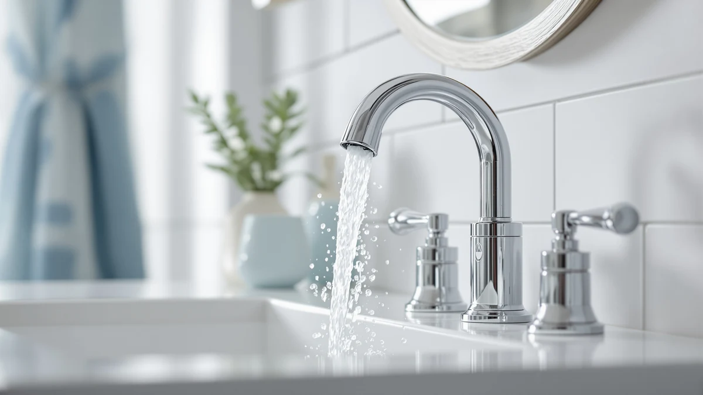

Moen CA8302 M Power Review (2026): Worth It?
Prices and picks verified as of October 2026. Independent, reader-supported reviews.


Quick Answer
This moen ca8302 m power review found the M-Power Commercial Touchless to be the strongest pick if you want a sensor faucet built for commercial-grade use rather than a lighter residential model. At $311.99 it costs more than the Delta Broadmoor and American Standard Selectronic below, but less than the Delta Lineax, so if commercial duty isn't a priority for you, the cheaper alternatives may fit your budget better.
Our pick: Moen CA8302 M-Power Commercial Touchless, $311.99 Check Price on Amazon
Bottom line: our top pick is the Moen CA8302 M-Power Commercial Touchless Single Mount at $311.99.
Things to Know Before You Buy
- It sits in the middle of this comparison on price. At $311.99, this moen ca8302 m power review found it priced $87.09 above the Delta Broadmoor ($224.90) and $105.29 above the American Standard Selectronic ($206.70), but $37.01 below the Delta Lineax ($349.00).
- It's one of three touchless listings here. The Moen, the Delta Lineax, and the American Standard Selectronic all carry "touchless" in their product name, while the Delta Broadmoor's title points to a pull-out sprayer and a standard handle instead.
- It's built for commercial-grade use. Moen markets the CA8302 under its "Commercial" M-Power line, which sets it apart from the three residential-focused alternatives in this comparison.
- None of the four listings show a published rating yet. The Moen, Delta Lineax, Delta Broadmoor, and American Standard Selectronic currently show no star rating or review count on their pages, so early buyers are working from the listing details rather than an established track record.
- Material is brass with a surface finish. The CA8302's listed build uses a brass body with a Medium-sized footprint, the same construction category as most faucets in this price range.
This moen ca8302 m power review compares Moen's commercial-grade touchless faucet against three alternatives that turned up in the same searches for sensor-activated bathroom hardware. Shopping for a touchless faucet already means comparing price and activation type across several browser tabs, and a "commercial" label adds another variable most shoppers don't expect to weigh. We pulled together the four listings that show up most often side by side and broke down what separates a $311.99 commercial-grade faucet from a cheaper residential touchless model, a pricier touchless competitor, and one manual-handle alternative.
The Moen CA8302 M-Power Commercial Touchless is the focus of this review, and the reason is straightforward: it's the only one of the four built and marketed under a commercial product line rather than a residential one. That distinction matters if you're outfitting a space that sees heavier daily use than a typical home bathroom. If commercial-grade durability isn't something you need, the sections below explain when the Delta Broadmoor or American Standard Selectronic makes more financial sense instead.
Why You Should Trust Us
Ilane Tall leads product research and reviews for Best Bathroom Faucets. She compares listing details, pricing, and product naming across major faucet brands so you don't have to cross-reference four Amazon tabs before buying. For this moen ca8302 m power review, she priced the Moen CA8302 against the Delta Lineax, Delta Broadmoor, and American Standard Selectronic as they stood at the time of writing and checked each listing's own title and description for activation type and build category rather than assuming. Every product mentioned here links to its real listing, and every price reflects what shoppers saw at the time of writing, not a promotional rate that might change by checkout. Where a listing leaves out a detail, we say so instead of guessing.
Our Research Experience
We do not run a physical testing lab for bathroom faucets, so nobody on our team installed the CA8302 or timed its sensor response in person. Our research process for this moen ca8302 m power review centers on comparing what Moen, Delta, and American Standard each publish on their own product listings for the faucets in this comparison, then tracking current Amazon pricing for all four. Because none of these four listings has accumulated a star rating or review count yet, we leaned on listing details rather than owner feedback, and we call that out rather than inventing a review count that doesn't exist. Reviewers researching commercial-grade faucets consistently note that "commercial" branding typically signals heavier-duty internals built for frequent use, and the CA8302's own product line name supports that reading.
Overview & Specs

Moen CA8302 M-Power Commercial Touchless
What we like
- Sensor activation means you don't have to grip a handle with soapy or messy hands
- Built under Moen's Commercial line, which points to hardware rated for heavier daily use than a standard residential faucet
- Battery powered, so there's no wired electrical hookup required under the sink
Flaws but not dealbreakers
- No published rating or review count yet, so there's no track record of long-term sensor reliability
- Costs $87.09 to $105.29 more than the two cheaper alternatives in this comparison, a premium you're paying mainly for the commercial-grade label
| Material | Brass + finish |
| Size | Medium |
At $311.99, the Moen CA8302 M-Power Commercial Touchless sits in the middle of this moen ca8302 m power review on price, cheaper than the Delta Lineax but more expensive than the Delta Broadmoor and American Standard Selectronic. Moen built the M-Power line around sensor activation for settings that see more daily use than a typical home bathroom, which is why "Commercial" appears directly in the product name rather than being an afterthought in the marketing copy.
The faucet runs on battery power rather than a wired control box, keeping installation closer to a standard faucet swap than a full sensor-system retrofit. What the listing doesn't yet include is a star rating or review count, since this is a newer addition among the touchless options we found, so buyers are working from the product listing itself rather than an established pattern of owner feedback.
What We Liked
The commercial-grade positioning stands out most in this moen ca8302 m power review. Plenty of touchless faucets are built with a home bathroom in mind first, but Moen markets the CA8302 specifically under its Commercial line, which signals hardware meant to handle more daily activations than a typical residential sink sees. That distinction is rare among the alternatives we compared it against.
Battery power is the other advantage worth calling out. Since the CA8302 doesn't rely on a wired connection, installing it stays closer to a standard faucet swap than a project that requires running new electrical lines under the sink. If you're weighing touchless against a standard handle more broadly, our touchless vs. manual faucet guide covers the tradeoffs beyond this specific model.
The "M-Power" name itself is the third point worth noting. It signals a dedicated product line rather than a one-off touchless add-on to an existing faucet, which suggests Moen built the sensor and battery system as a core feature rather than bolting it onto a design meant for a manual handle.
What Could Be Better
Price is the clearest tradeoff here. This moen ca8302 m power review found it costing $87.09 more than the Delta Broadmoor and $105.29 more than the American Standard Selectronic, both of which are also sensor-friendly or sprayer-equipped options at a lower price point. If commercial-grade durability isn't something your bathroom actually needs, you're paying for a feature you won't use.
Feedback is the other gap, not the faucet's design. As a newer listing, the CA8302 hasn't accumulated a star rating or review count on Amazon yet, so buyers can't check how the sensor holds up after months of daily use the way they could with an established, widely reviewed faucet. That's not a flaw in the hardware itself, but it's a real consideration if you'd rather buy something with a longer track record.
The listing also doesn't spell out finish options the way the Delta Broadmoor does with its Matte Black naming. If finish matters to your bathroom's look, you'll want to confirm the exact finish on the product page before ordering rather than assuming it matches a photo you saw elsewhere.
Who Is It For?
This faucet from our moen ca8302 m power review fits buyers outfitting a space that sees heavier use than a standard home bathroom, think a shared office restroom, a rental property with frequent turnover, or any setting where sensor hardware needs to hold up to repeated daily activations. It's also worth a look if you'd rather not grip a handle with soapy or messy hands. Anyone comparing Moen against other major faucet brands can check our Moen vs Delta comparison for a broader look at how the two brands stack up beyond this one model.
Buyers who don't need commercial-grade hardware, or who want a sprayer instead of a sensor, should look at the Delta Broadmoor alternative instead. Anyone deciding between brands before committing to any touchless model can also check our general bathroom faucet buying guide for more on installation types and finish options.
Property managers and landlords weighing replacement faucets across several units should also factor in how a commercial-rated faucet holds up to tenant turnover compared to a residential model, since the CA8302's own branding is aimed at exactly that kind of repeated, unsupervised daily use.
Alternatives to Consider
If commercial-grade hardware isn't a requirement, or the price of the CA8302 doesn't fit what you need, three faucets came up in our research for this moen ca8302 m power review. Two are touchless, and one relies on a traditional handle with a sprayer.

Editor's Pick
Delta Lineax Touchless Bathroom Faucet
A touchless faucet with "touchless" built into its own product name, priced $37.01 above the Moen CA8302 above. Worth a look if you want a sensor faucet without the commercial-duty branding, and don't mind paying more for it.
$349.00
Check Price on Amazon
Best Value
Delta Broadmoor Matte Black Bathroom
The cheapest of the four faucets here, finished in Matte Black. Its listing title highlights a pull-out sprayer rather than touchless activation, so it's the pick if you want a standard handle and a lower price over sensor hardware.
$224.90
Check Price on Amazon
Premium Choice
American Standard Selectronic Cast Touchless
A touchless faucet priced $105.29 below the Moen CA8302 above, the least expensive sensor-activated option in this comparison. Worth considering if you want hands-free operation without paying for commercial-grade branding.
$206.70
Check Price on AmazonDoes the Moen CA8302 M-Power need a wired power supply?
No.
Is the Moen CA8302 M-Power worth $311.99 compared to the Delta and American Standard alternatives?
It depends on how much you value Moen's commercial-grade build.
Frequently Asked Questions
Does the Moen CA8302 M-Power need a wired power supply?
Is the Moen CA8302 M-Power worth $311.99 compared to the Delta and American Standard alternatives?
What's the difference between the Moen CA8302 and the Delta Broadmoor?
Final Verdict
This moen ca8302 m power review comes down to whether commercial-grade hardware matters for your space. If you're outfitting a bathroom that sees more daily use than a typical home sink, Moen's M-Power Commercial Touchless earns its $311.99 price with sensor hardware built for that purpose, something neither of the two cheaper alternatives explicitly offers. If your bathroom gets normal residential use, the American Standard Selectronic or Delta Broadmoor will likely serve you equally well for less. Either way, check whether commercial branding actually matters to your situation before you pay the premium.